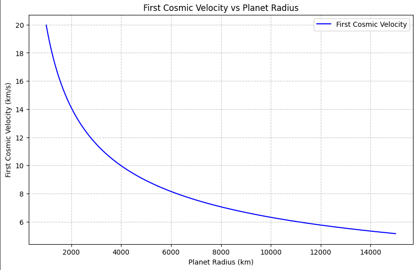
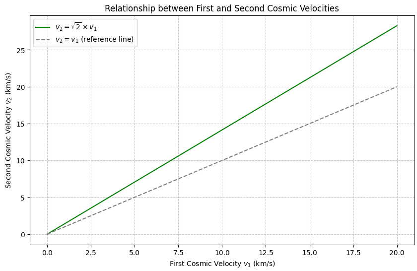
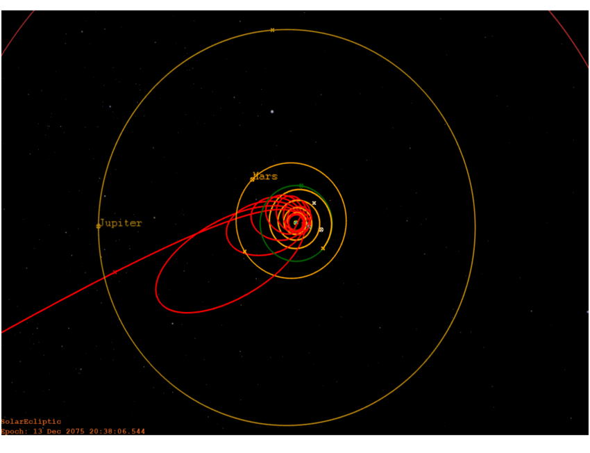
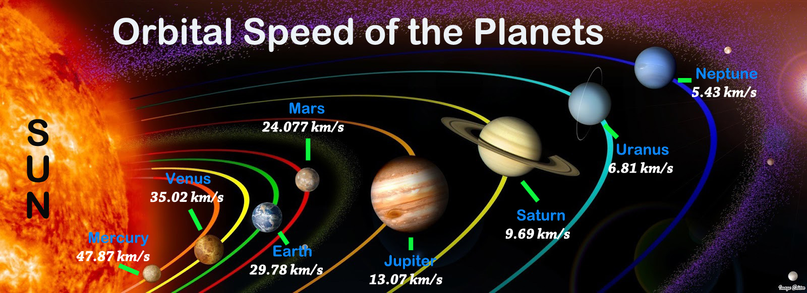
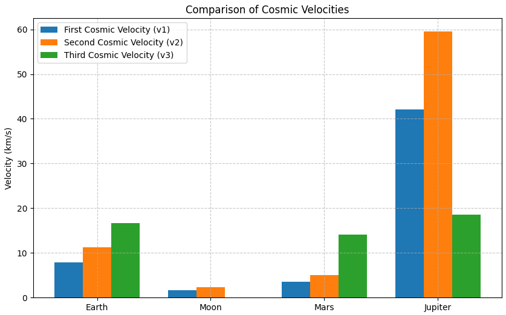

GRAVITY PROBLEM 2: Escape Velocities and Cosmic Velocities
Definitions and Physical Meaning
- First Cosmic Velocity (Orbital Velocity)
-
Minimum speed to enter a circular orbit near the surface of a planet, without propulsion.
-
Second Cosmic Velocity (Escape Velocity)
-
Minimum speed to completely overcome the planet’s gravitational field without further propulsion.
-
Third Cosmic Velocity (Interplanetary Escape Velocity)
- Minimum speed needed to escape the gravitational field of the Sun starting from the orbit around the planet.
Mathematical Derivations
1. First Cosmic Velocity Derivation (v₁)
An object in a circular orbit experiences gravitational force as the centripetal force:
where: - \(G\) = gravitational constant - \(M\) = mass of the planet - \(m\) = mass of the object - \(R\) = radius of the planet - \(v_1\) = first cosmic velocity
Solving for \(v_1\):
Velocity vs Planet Radius for first cosmic velocity: 
2. Second Cosmic Velocity Derivation (v₂)
The object needs kinetic energy to match the gravitational potential energy:
Solving for \(v_2\):
Notice that:
Relationship between first and second cosmic velocities:

3. Third Cosmic Velocity Derivation (v₃)
To escape from the Sun's gravity starting from orbit around Earth: - First, object must reach Earth escape velocity (\(v_2\)) - Then, it must have enough additional velocity to escape the Sun’s gravitational field.
Approximate derivation:
where: - \(v_{e,Sun}\) = escape velocity from Sun at Earth's orbit - \(v_{orb,Earth}\) = Earth's orbital speed around the Sun
More precisely:
Since Earth moves around the Sun, the spacecraft needs to cancel Earth’s orbital motion and then escape.
Also here is the escape trajectory from solar orbit: 
Values for Earth
| Quantity | Value |
|---|---|
| Mass \(M_{\text{Earth}}\) | \(5.972 \times 10^{24} \, \text{kg}\) |
| Radius \(R_{\text{Earth}}\) | \(6.371 \times 10^6 \, \text{m}\) |
| Gravitational Constant \(G\) | \(6.67430 \times 10^{-11} \, \text{m}^3 \text{kg}^{-1} \text{s}^{-2}\) |
Calculating:
$$ v_3 \approx 16.7 \, \text{km/s} $$
Visual/Data Comparison: Earth vs Moon, Mars, Jupiter
| Celestial Body | \(v_1\) (km/s) | \(v_2\) (km/s) | \(v_3\) (km/s) (approximate) |
|---|---|---|---|
| Earth | 7.9 | 11.2 | 16.7 |
| Moon | 1.68 | 2.38 | - (Moon orbiting Earth) |
| Mars | 3.55 | 5.03 | ~14.1 |
| Jupiter | 42.1 | 59.5 | ~18.5 |
And here is the comparison of cosmic velocities for Earth, Moon, Mars, and Jupiter:

and also python graph:

Graphical Representation
Comparison of Cosmic Velocities:
import matplotlib.pyplot as plt
# Data
bodies = ['Earth', 'Moon', 'Mars', 'Jupiter']
v1 = [7.9, 1.68, 3.55, 42.1]
v2 = [11.2, 2.38, 5.03, 59.5]
v3 = [16.7, None, 14.1, 18.5] # Moon doesn't have v3 in same sense
x = range(len(bodies))
# Plot
plt.figure(figsize=(10, 6))
plt.bar(x, v1, width=0.25, label='First Cosmic Velocity (v1)', align='center')
plt.bar([i + 0.25 for i in x], v2, width=0.25, label='Second Cosmic Velocity (v2)', align='center')
plt.bar([i + 0.5 for i in x], [v if v else 0 for v in v3], width=0.25, label='Third Cosmic Velocity (v3)', align='center')
plt.xticks([i + 0.25 for i in x], bodies)
plt.ylabel('Velocity (km/s)')
plt.title('Comparison of Cosmic Velocities')
plt.legend()
plt.grid(True, linestyle='--', alpha=0.7)
plt.show()
Velocity vs Planet Radius for first cosmic velocity python code:
import numpy as np
import matplotlib.pyplot as plt
# Constants
G = 6.67430e-11 # gravitational constant in m^3 kg^-1 s^-2
M = 5.972e24 # mass of Earth in kg (we'll keep it constant for this graph)
# Generate a range of planet radii (in meters)
radii = np.linspace(1e6, 1.5e7, 500) # from 1000 km to 15000 km
# Calculate first cosmic velocity for each radius
v1 = np.sqrt(G * M / radii)
# Convert velocity to km/s
v1_km_s = v1 / 1000
# Plotting
plt.figure(figsize=(10,6))
plt.plot(radii/1000, v1_km_s, label='First Cosmic Velocity', color='blue') # radii in km
plt.xlabel('Planet Radius (km)')
plt.ylabel('First Cosmic Velocity (km/s)')
plt.title('First Cosmic Velocity vs Planet Radius')
plt.grid(True, linestyle='--', alpha=0.7)
plt.legend()
plt.show()
Relationship between first and second cosmic velocities:
import numpy as np
import matplotlib.pyplot as plt
# Define a range of first cosmic velocities (v1) in km/s
v1 = np.linspace(0, 20, 500)
# Calculate second cosmic velocities (v2)
v2 = np.sqrt(2) * v1
# Plotting
plt.figure(figsize=(10,6))
plt.plot(v1, v2, label=r'$v_2 = \sqrt{2} \times v_1$', color='green')
plt.plot(v1, v1, linestyle='--', color='gray', label=r'$v_2 = v_1$ (reference line)')
plt.xlabel('First Cosmic Velocity $v_1$ (km/s)')
plt.ylabel('Second Cosmic Velocity $v_2$ (km/s)')
plt.title('Relationship between First and Second Cosmic Velocities')
plt.grid(True, linestyle='--', alpha=0.7)
plt.legend()
plt.show()
Importance in Space Exploration
- First Cosmic Velocity: Satellites in low Earth orbit (e.g., ISS).
- Second Cosmic Velocity: Interplanetary missions (e.g., Apollo to the Moon).
- Third Cosmic Velocity: Interstellar probes (e.g., Voyager missions leaving the Solar System).
Understanding these velocities allows mission designers to optimize launch profiles and minimize fuel usage, which is crucial for cost-effective space exploration.